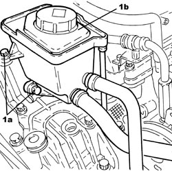
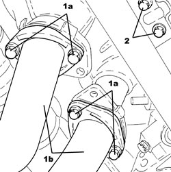
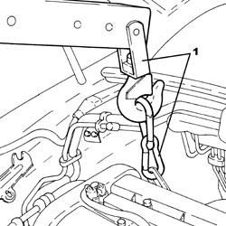
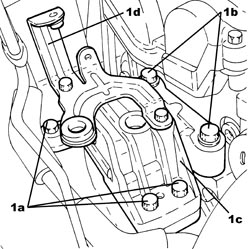
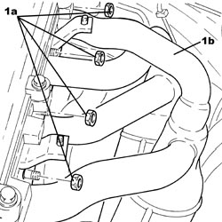
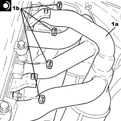
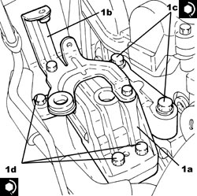
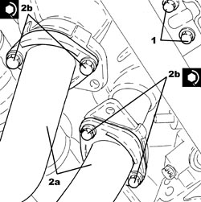

1072C16 EXHAUST MANIFOLD WITH CATALYTIC CONVERTER - R.R.
- Path
- Procedures > 10 ENGINE > 1072 INLET AND EXHAUST MANIFOLDS > 1072C EXHAUST MANIFOLDS > 1072C16 EXHAUST MANIFOLD WITH CATALYTIC CONVERTER - R.R.
- Kind
- repair procedure (removal / refitting; the operation number is the code)
- Applies to
- engines: 2.2 JTS; all production periods
- Interactive page
- https://sloeber94.github.io/elrnDB-aBrrSpdr/en/#/946001945
Applies to: engines: 2.2 JTS; all production periods
 Removing
Removing
 Refitting
Refitting- Position the vehicle on a lift.
- Make sure that the ignition key is in the OFF position, then disconnect the battery terminal (-).
Description | Connector | |
|---|---|---|
- | Battery |
Op. 1072C43 EXHAUST MANIFOLD UPPER BULKHEAD R R
Op. 1072C42 EXHAUST MANIFOLD LOWER BULKHEAD R R
Op. 1048A34 HOSE(S) FROM FLOW METER TO AIR SUPPLY CAPACITY CASE - R + R
Op. 1056F17 THROTTLE BODY WITH DVL - R.R.
Op. 1072B50 AIR CHAMBER - R.R.
Op. 1048A28 VACUUM AIR CIRCUIT RESONATOR PIPE - R+R
1. Undo the bolts (1a) and move the power assisted steering fluid reservoir (1b) sideways.

Applies to: engines: 2.2 JTS; all production periods
1. Undo the bolts (1a) and disconnect the intermediate exhaust pipe (1b), exhaust manifold and catalytic converter side.
2. Undo the bolts fixing the exhaust manifold and catalytic converter to the mounting bracket.

Applies to: engines: 2.2 JTS; all production periods
1. Support the power unit using a hydraulic hoist.

Applies to: engines: 2.2 JTS; all production periods
1. Undo the bolts (1a), (1b) and the flexible mounting for the timing side power unit front support (1c) complete with power assisted steering fluid reservoir mounting bracket (1d).

Applies to: engines: 2.2 JTS; all production periods
- Using the hydraulic hoist, tilt the power unit forwards, as necessary, to extract the exhaust manifold and catalytic converter.
1. Undo the nuts (1a) and remove the exhaust manifold and catalytic converter (1b).
- Remove the gasket.

Applies to: engines: 2.2 JTS; all production periods
Refitting
Removing- Place a new gasket back in position.
1. Place the exhaust manifold and catalytic converter (1a) in its housing and secure it by tightening the nuts (1b) to the recommended torque.
Component | Fastening | dia | Value (daNm) | Validity |
|---|---|---|---|---|
Exhaust manifold with catalytic converter | Nut | M8 | (cylinder head side) 2.2 - 2.6 | 1.9 JTS 2.2 JTS |

Applies to: engines: 2.2 JTS; all production periods
1. Place the timing power unit front support flexible mounting (1a) complete with power assisted steering fluid reservoir mounting bracket (1b) in its housing and secure it tightening the new bolts (1c) and (1d) to the recommended torque.
Component | Fastening | dia | Value (daNm) | Validity |
|---|---|---|---|---|
Timing side power unit rigid support flexible mounting | Bolt (to be replaced) | M12 | (rigid support side) 6.3 - 7.7 + 90° |
Component | Fastening | dia | Value (daNm) | Validity |
|---|---|---|---|---|
Timing side power unit rigid support flexible mounting | Bolt (to be replaced) | M12 | (bodyshell side) 6.3 - 7.7 + 90° |

Applies to: engines: 2.2 JTS; all production periods
- Remove the hydraulic hoist used to support the power unit.
1. Tighten the bolts fixing the exhaust manifold and catalytic converter to the mounting bracket.
2. Connect the intermediate exhaust pipe (2a), exhaust manifold side with the catalytic converter and tighten the bolts (2b) to the recommended torque.
Component | Fastening | dia | Value (daNm) | Validity |
|---|---|---|---|---|
Intermediate exhaust pipe with flexible section | Bolt | M8 | (exhaust manifold side with catalytic converter) 2.2 - 2.6 | 1.9 JTS 2.2 JTS |

Applies to: engines: 2.2 JTS; all production periods
- Place the power assisted steering fluid reservoir in its housing and secure it using the bolts.
Op. 1048A28 VACUUM AIR CIRCUIT RESONATOR PIPE - R+R
Op. 1072B50 AIR CHAMBER - R.R.
Op. 1056F17 THROTTLE BODY WITH DVL - R.R.
Op. 1048A34 HOSE(S) FROM FLOW METER TO AIR SUPPLY CAPACITY CASE - R + R
Op. 1072C42 EXHAUST MANIFOLD LOWER BULKHEAD R R
Op. 1072C43 EXHAUST MANIFOLD UPPER BULKHEAD R R
- Connect the negative battery terminal.
- Remove the vehicle from the lift.
Topics linked from this page (7)
- 1048A28 VACUUM AIR CIRCUIT RESONATOR PIPE - R+R
- 1048A34 HOSE(S) FROM FLOW METER TO AIR SUPPLY CAPACITY CASE - R + R
- 1056F17 THROTTLE BODY WITH DVL - R.R.
- 1072B50 AIR CHAMBER - R.R.
- 1072C42 EXHAUST MANIFOLD LOWER BULKHEAD R R
- 1072C43 EXHAUST MANIFOLD UPPER BULKHEAD R R
- A001 BATTERY